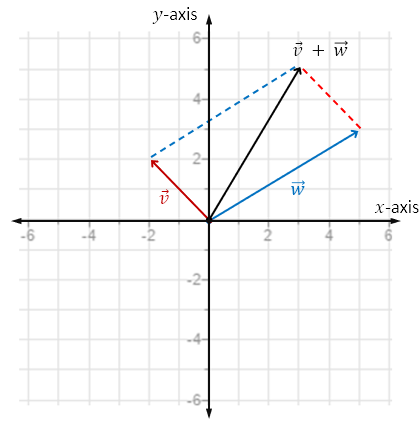
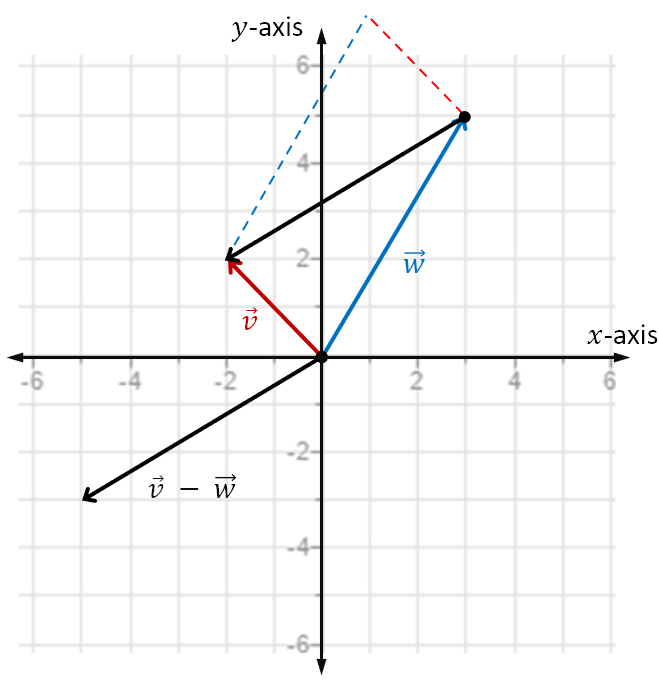
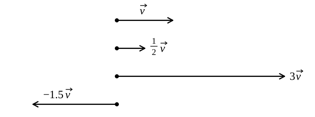
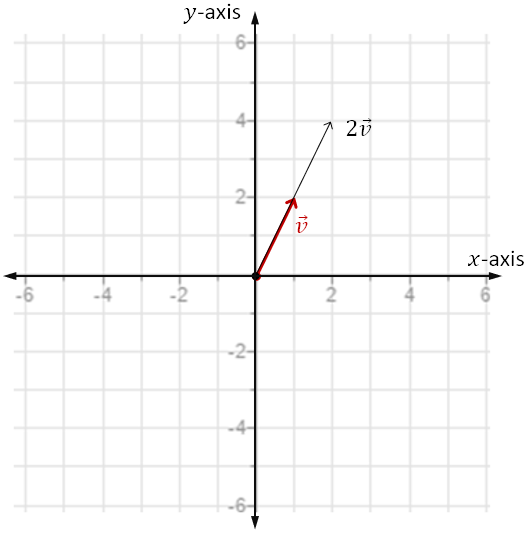
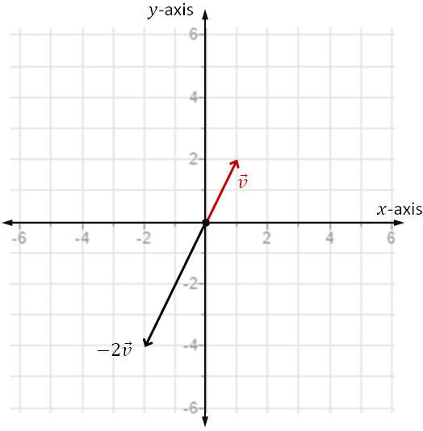

Vector Arithmetic
Given vectors \(\vec{v} = \langle -2, 2 \rangle\) and \(\vec{w} = \langle 5, 3 \rangle\), find \(\vec{v} + \vec{w}\). Graph the scenario.
Idea: Add vectors by adding the corresponding components.
Notice the sum of the vectors is the vector corresponding to a diagonal of the parallelogram.

Given the vectors \(\vec{v} = \langle -2, 2 \rangle\) and \(\vec{w} = \langle 3, 5 \rangle\), find \(\vec{v} - \vec{w}\). Graph the scenario.
Idea: Subtract vectors by subtracting the corresponding components.
Notice the difference of the vectors is the vector corresponding to the diagonal of the parallelogram connecting the terminal points. And it points from the terminal point of \(\vec{w}\) to the terminal point of \(\vec{v}\).

Two vectors are parallel if they have the same direction, or the opposite direction. If \(k\) is a nonzero scalar, then \(k\vec{v}\) is parallel to \(\vec{v}\), and its magnitude is scaled by a factor of \(|k|\): \(\|k\vec{v}\| = |k|\,\|\vec{v}\|\).

Given the vector \(\vec{v} = \langle 1, 2 \rangle\), find \(2\vec{v}\). Graph the scenario.
Idea: Multiply the components by two.
Notice \(2\vec{v}\) is double the length of \(\vec{v}\) and they have the same direction.

Given the vector \(\vec{v} = \langle 1, 2 \rangle\), find \(-2\vec{v}\). Graph the scenario.
Notice the direction of the vector is reversed!

For vectors \(\vec{u}\), \(\vec{v}\), and \(\vec{w}\), and scalars \(a\) and \(b\), the following are true.
Each of these properties can be verified by writing the vectors in components and carrying out the operations. As an example, we verify one of them below.
Verify the below property of vectors.
This follows by performing the operations via the components of the vectors, as below.
The other properties can be proven in a similar manner.